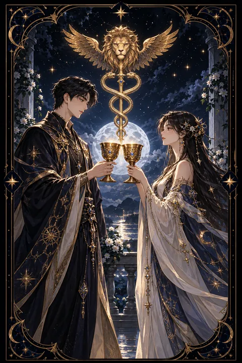

컵 2 카드 — 마음이 통하는 인연과 결합
컵 2 카드 한눈에 보기
컵 2 카드 상징 읽기

동네보살의 카드 그림은 전통 라이더–웨이트 덱의 뜻을 새 그림으로 옮긴 것입니다. 아래 상징 설명은 전통 덱의 그림을 기준으로 합니다.
젊은 남녀가 마주 서서 각자의 잔을 상대에게 내밀고 있습니다. 두 사람은 키와 자세가 비슷하게 그려져 있어 어느 한쪽이 우위에 서지 않은 대등한 관계를 나타냅니다.
두 사람 사이에는 뱀 두 마리가 감긴 지팡이, 곧 헤르메스의 카두케우스가 세워져 있습니다. 서로 다른 두 힘이 얽혀 조화를 이루는 모습이며 관계가 서로를 살리고 회복시키는 힘을 지닌다는 뜻으로 읽힙니다.
지팡이 위에 뜬 날개 달린 붉은 사자 머리는 열정과 욕망이 영적인 차원으로 들어 올려진 상태를 상징합니다. 두 사람의 결합이 단순한 끌림을 넘어 더 높은 약속으로 이어진다는 의미입니다. 두 사람 모두 머리에 화관을 쓰고 있으며 뒤편 언덕 위의 집은 두 사람이 함께 꾸려 갈 안정된 미래를 보여 줍니다. 두 사람이 서 있는 땅이 평평한 것도 균형 잡힌 관계를 한 번 더 강조합니다.
컵 2 카드 정방향 뜻
정방향 컵 2는 서로를 알아보는 두 사람의 만남을 뜻합니다. 연인뿐 아니라 친구, 동료, 사업 파트너처럼 마음과 뜻이 맞는 관계가 새로 맺어지거나 한층 단단해지는 시기입니다.
이 카드의 핵심은 균형입니다. 한 사람이 끌고 다른 사람이 따라가는 관계가 아니라 서로 같은 만큼 주고받으며 존중하는 관계가 이 카드의 모습입니다. 그래서 오랫동안 어긋났던 사이가 화해하는 계기가 되기도 하고 경쟁하던 상대와 손을 잡게 되는 전환점이 되기도 합니다.
혼자 고민하던 문제가 있다면 믿을 만한 사람과 나눠 보세요. 비슷한 생각을 품은 사람이 가까이 있을 가능성이 큽니다. 상대의 이야기에 귀를 기울이고 자신의 뜻도 분명히 전하면 두 잔이 맞닿는 순간처럼 관계가 자연스럽게 깊어집니다.
컵 2 카드 역방향 뜻
역방향 컵 2는 마주 보던 관계의 저울이 한쪽으로 기운 모습입니다. 한쪽만 연락하고 한쪽만 양보하는 식으로 무게가 기울었거나 작은 오해가 쌓여 대화가 끊긴 상태일 수 있습니다.
연인 사이의 다툼, 동업자와의 의견 충돌, 친구와의 거리감처럼 가까운 관계에서 갈등이 드러나는 흐름입니다. 서로 기대하는 것이 달랐는데 그것을 확인하지 않고 지나온 것이 원인인 경우가 많습니다. 믿음이 흔들려 상대의 말을 의심하게 되기도 합니다.
하지만 이 카드는 관계의 끝을 단정하지 않습니다. 기울어진 저울은 무게를 옮기면 다시 수평을 찾습니다. 상대를 탓하기 전에 각자 바라는 것을 솔직하게 꺼내 놓는 대화가 필요합니다. 감정이 격해진 상태라면 하루쯤 시간을 두고 차분해진 뒤에 이야기를 나누는 편이 훨씬 좋은 결과를 냅니다.
연애에서 컵 2 카드
솔로라면 마음이 통하는 사람이 곁에 나타나기 좋은 때입니다. 말이 잘 통하고 곁에 있으면 편안한 상대가 나타난다면 그 느낌을 믿어도 좋습니다. 호감이 서로 오가는 신호가 보이면 둘만의 약속을 제안해 관계를 한 걸음 진전시켜 보세요.
연애 중이라면 서로를 향한 신뢰가 깊어지는 때입니다. 약속, 고백, 공식적인 관계 선언처럼 두 사람의 마음을 확인하는 일이 생기기 쉽습니다. 싸운 뒤라면 화해의 기회가 찾아오니 먼저 손을 내밀어 보세요.
역방향이라면 한쪽만 애쓰는 관계가 되어 있지 않은지 살펴볼 때입니다. 서운함을 쌓아 두기보다 바라는 것을 구체적으로 말하고 상대의 입장도 들어 보는 대화가 관계의 수평을 되찾아 줍니다. 함께 정한 작은 약속을 꾸준히 지키는 것만으로도 두 사람의 수평은 오래 유지됩니다.
재회·속마음 질문에서 컵 2 카드
재회를 묻는 자리에서 컵 2가 나오면 두 사람의 마음이 다시 이어질 가능성이 꽤 높은 편입니다. 상대 역시 좋았던 시절을 기억하고 있고 대등한 자리에서 다시 이야기를 나누고 싶어 할 수 있습니다. 다만 예전처럼 한쪽이 참고 맞추는 관계로 돌아간다면 같은 이유로 다시 멀어질 수 있습니다. 헤어진 이유를 서로 인정하고 새로운 약속을 정하는 방식으로 다가가 보세요. 역방향이라면 아직 오해가 풀리지 않은 상태이니 사과와 설명이 먼저입니다. 두 사람 모두 예전보다 성숙해졌다면 대화의 온도도 달라져 있을 것입니다. 서로 원하는 관계의 모습을 구체적으로 맞춰 보는 과정이 필요합니다.
일·금전에서 컵 2 카드
일에서는 좋은 협력자를 만나는 카드입니다. 동업 제안, 팀 프로젝트, 거래처와의 계약처럼 두 사람 혹은 두 조직이 힘을 합치는 일이 순조롭게 풀립니다. 뜻이 맞는 동료와 역할을 나누면 혼자일 때보다 훨씬 큰 성과가 납니다.
금전 면에서는 서로에게 이익이 되는 거래가 성사되기 쉽습니다. 다만 가까운 사이일수록 조건을 문서로 남겨 두어야 관계도 오래 지켜집니다. 역방향일 때는 계약 조건이나 역할 분담에서 어긋난 부분이 없는지 다시 확인해 보세요. 혼자 결정하기 어려운 일이라면 믿을 만한 동료에게 의견을 구해 보세요. 두 사람의 시선이 겹치는 지점에서 좋은 답이 나옵니다. 동업이나 협업이라면 역할과 몫을 글로 적어 두는 것이 서로를 지켜 줍니다.
컵 2 카드는 예일까 아니오일까
두 사람이 같은 눈높이에서 잔을 나누는 카드여서 상대와 뜻이 맞고 일이 성사된다는 뜻에서 예로 읽습니다. 뒤집혀 나오면 한쪽으로 기운 관계라 대화로 균형을 되찾는다는 조건이 붙습니다.
자주 묻는 질문
컵 2 카드 역방향은 나쁜 뜻인가요?
역방향 컵 2는 마주 보던 관계의 저울이 한쪽으로 기운 모습입니다. 한쪽만 연락하고 한쪽만 양보하는 식으로 무게가 기울었거나 작은 오해가 쌓여 대화가 끊긴 상태일 수 있습니다.
컵 2 카드가 연애 질문에 나오면요?
솔로라면 마음이 통하는 사람이 곁에 나타나기 좋은 때입니다. 말이 잘 통하고 곁에 있으면 편안한 상대가 나타난다면 그 느낌을 믿어도 좋습니다. 호감이 서로 오가는 신호가 보이면 둘만의 약속을 제안해 관계를 한 걸음 진전시켜 보세요.
타로 카드는 어떻게 뽑나요?
타로 카드 페이지에서 78장을 섞으면 그중 22장이 펼쳐집니다. 마음이 가는 세 장을 고르면 과거·현재·미래 자리에 놓이고, 한 장씩 뒤집어 자리와 방향에 맞는 풀이를 읽습니다. 정방향과 역방향은 섞는 순간 정해집니다.